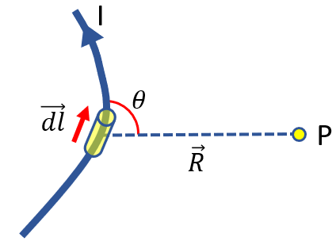
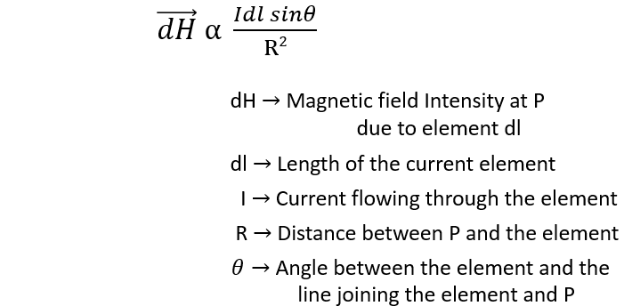
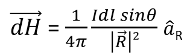

HOME BLOG EBOOKS ABOUT CONTACT SHOP
Biot- Savart Law states that “the magnetic field intensity produced due to a current element at a point is proportional to the product of the current and the differential length, sine of the angle between the element and the line joining the point to the element, and inversely proportional to the square of the distance between the point and the element”.

Mathematically, the Biot Savart law can be expressed as,

The constant of proportionality is k = 1/4π.
In vector form, the Biot Savart law can be expressed as,
